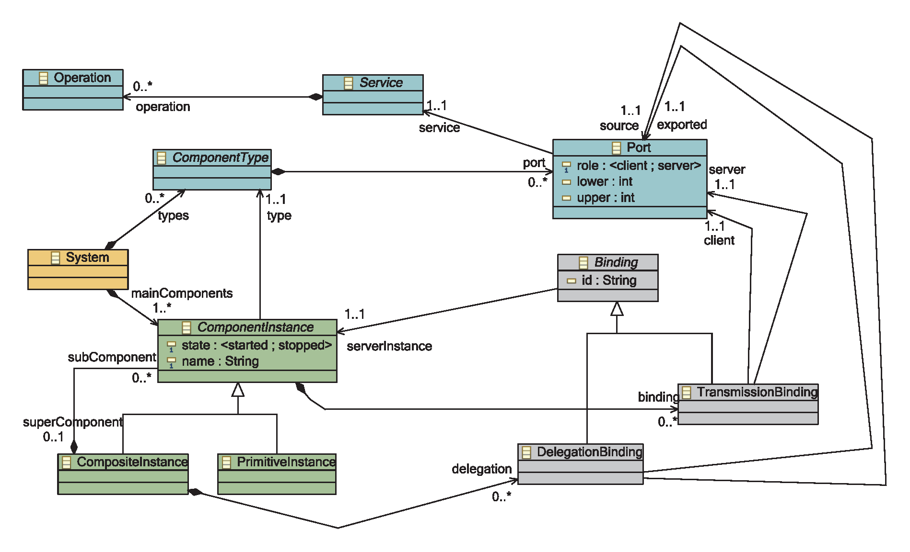

Architecture Metamodel
This document describes the Architecture Metamodel we use in DiVA. This metamodel and all the tools supporting this metamodel are open-source and are (to be) integrated in the DiVA Studio.
Description
The metamodel (main meta-classes) is illustrated in the Figure below. Details about this metamodel can be found in K@RT: An Aspect-Oriented and Model-Oriented
Framework for Dynamic Software Product Lines
This core metamodel only contains the concepts and relationships we need to describe the architecture of a running system. This way, we can reduce the memory overhead caused by maintaining a model at runtime. It clearly separates the notion of component types and component instances.

A component type contains some ports. Each port has a cardinality (upper and lower bounds) indicating if the port is optional (lowerBound = 0) or mandatory (lowerBound > 0). It also indicate if the port only allows single bindings (upperBound = 1) or multiple bindings (upperBound > 1). A port also declares a role (client or server) and is associated to a service. A service encapsulates some operations, defined by a name, a return type and some parameters. A service has a similar structure as Java interface.
Component instances define the actual topology of a running system. A component has a type and a state (ON/OFF), specifying whether the component is started or stopped. It can be bound to other instances by a transmission binding, linking a provided service (server port) to a required service (client port). A composite instance can additionally declare sub-instances and delegation bindings. A delegation binding specifies that a service from a sub-component is exported by the composite instance.
Tools supporting this Metamodel
Graphical Editor
At design-time, we use the open-source SCA (Software Component Architecture) metamodel for the following reasons: the concepts offered by SCA are well aligned with the concepts we need in DiVA, it is supported by a strong consortium (IBM, Oracle, SAP, etc), it has an intuitive and easy to use graphical editor. This metamodel is mapped to our core metamodel via a model transformation written in Kermeta. SCA is included in DiVA Studio.
SCA to Architecture MM
The transformation from SCA to the DiVA Architecture MM is realized by the org.kermeta.art.sca2runtime plugin.
Architecture MM to SCA
The transformation from the DiVA Architecture MM to SCA is realized by the org.kermeta.art.runtime2sca plugin.
Invariant Checker
The DiVA architecture MM is aspectized with Kermeta invariants in eu.ict-diva.component.checker. These invariants mainly check well formedness rules.